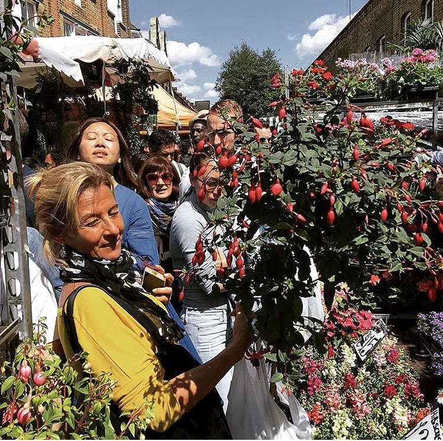

Bienvenidos a nuestro sitio web
Mi nombre es Alejandra y quiero darle una cálida bienvenida a Beatriz Cocina.
Comencé este emprendimiento hace tan solo algunos años, si bien llevo décadas trabajando en el ámbito gastrónomico realizando caterings, pastelería y teniendo mi propio restaurant, quería encontrar una manera de hacerle llegar a su mesa lo que más le disfrute de nuestra cocina.
Con esta idea y con mucho esfuerzo es que comencé este proyecto. Disfrute de su navegación por nuestro sitio!
Y recuerde, ante cualquier consulta no dude en contactarnos.
Si de experiencia e historia hablamos...

Proviniendo ya de una familia italiana y amante del buen comer, me crié en una casa donde la comida casera era la norma y el buen aroma a pastas lo habitual.
Era de esperarse, que de allí no salieran ni más ni menos que chefs y pasteleras!
Claro que no siempre es todo tan lineal, comencé primero estudiando bellas artes, danza, nutrición... Bueno, vemos que el camino no será lineal pero la pasión por el arte lo une todo, verdad? Y qué arte el de poder satisfacer un paladar!
Finalmente, incurrí en el universo gastronómico de a poquito. Así fue como inicié mi primer gran proyecto gastronómico "La Pulpería", quizás, si estas leyendo esto la conozcas. Allá por el 2000 le dimos inicio, con la ayuda de mi hermana y chef, Paula Comparatore, y mi pareja y compañero, Adrian Castro.
Unos años luego de seguir recopilando experiencia, fui por mi título de pastelería profesional en el IAG (sí, ya con 40 años! Quién dice que hay edades para seguir formandonos y encontrando lo que nos apasiona, no?
Con La Pulpería en funcionamiento y en manos de mi fiel compañero, decidí que quería explorar un camino distinto, un nuevo proyecto personal. Quería especializarme primero en la pastelería y ofrecerla abiertamente. Luego, fue surgiendo esta idea de proponer una alternativa de comida saludable y adaptada a cada gusto y paladar, para ser disfrutada en la mesa de cada casa. Para ayudar a quien no tuviera tiempo de organizarse, cocinarse o simplemente quería sentir nuestros sabores, en la comodidad de su hogar...
He aquí mi nuevo proyecto en curso, con su forma tomada y adquirida a lo largo de los últimos 4 años.